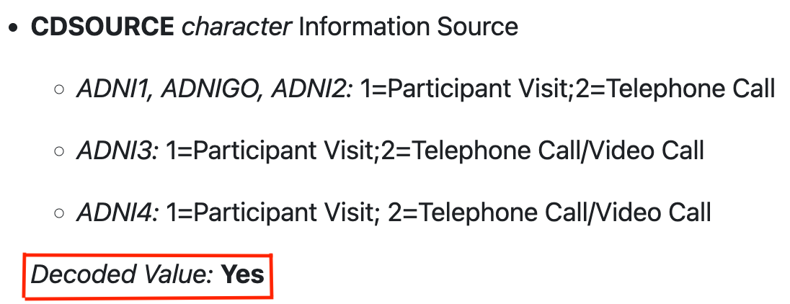

Overview
The main goal of developing the Alzheimer’s Disease Neuroimaging
Initiative (ADNI) study R data package,
ADNIMERGE2, is to grant easy access of the study
data, which is being collected over two decades, for any researchers
and/or data analyst who are interested to learn more about the study and
conduct data analysis using the R software.
Package Source
The ADNIMERGE2 R package will be available on
the data-sharing platform at LONI
website. To get access the package, it is required to submit an
online application via LONI website and acceptance of the ADNI Data Use
Agreement. Please visit at https://adni.loni.usc.edu/data-samples/adni-data/#AccessData
to learn more about the application submission process and ADNI Data Use
Agreement.
Installation
To install the package locally, run
install.packages("path/to/ADNIMERGE2_0.1.1.tar.gz", repos = NULL, type = "source").
Package Usage
Package Source Data Date
The ADNIMERGE2 package contains a data stamped date of which the raw data is downloaded from the data-sharing platform. For instance, the current package contains data that downloaded from the data-sharing platform as of 2025-09-16. To get the data stamped date:
# Data source downloaded date
ADNIMERGE2::DATA_DOWNLOADED_DATE
#> [1] "2025-09-16"Data Dictionary
A separate data dictionary file for both raw and derived datasets is included in the package.
Raw Dataset: Defined as all the study data that are available on the data-sharing platform.
Derived Dataset: Defined as data that are generated during this package building. Please refer to the package vignettes to learn more how these data are generated.
# Data dictionary for raw data
head(ADNIMERGE2::DATADIC, 6)
#> # A tibble: 6 × 13
#> PHASE CRFNAME TBLNAME FLDNAME TEXT TYPE LENGTH DD_CRF_VERSION CODE UNITS
#> <chr> <chr> <chr> <chr> <chr> <chr> <chr> <chr> <chr> <chr>
#> 1 ADNI1 ADAS-Cogn… ADAS PTID Part… NA NA NA NA NA
#> 2 ADNI1 ADAS-Cogn… ADAS RID Part… N 38 di… NA NA NA
#> 3 ADNI1 ADAS-Cogn… ADAS VISCODE Visi… T 20 ch… NA NA NA
#> 4 ADNI1 ADAS-Cogn… ADAS EXAMDA… Exam… D 10 NA NA NA
#> 5 ADNI1 ADAS-Cogn… ADAS VISDATE Asse… D NA NA NA NA
#> 6 ADNI1 ADAS-Cogn… ADAS COT1LI… Tria… T 20 NA 1=BU… NA
#> # ℹ 3 more variables: STATUS <chr>, CODE_CHANGES <chr>, MAPPING_NOTES <chr>
# Data dictionary for derived data
head(ADNIMERGE2::DERIVED_DATADIC, 6)
#> # A tibble: 6 × 5
#> TBLNAME CRFNAME FLDNAME LABEL TEXT
#> <chr> <chr> <chr> <chr> <chr>
#> 1 ADAE Analysis Dataset of Adverse Events STUDYID Study Identifier " "
#> 2 ADAE Analysis Dataset of Adverse Events USUBJID Unique Subject Ident… " "
#> 3 ADAE Analysis Dataset of Adverse Events SUBJID Subject Identifier f… " "
#> 4 ADAE Analysis Dataset of Adverse Events SITEID Study Site Identifier " "
#> 5 ADAE Analysis Dataset of Adverse Events TRTA Actual Arm " "
#> 6 ADAE Analysis Dataset of Adverse Events TRTP Planned Arm " "
# Data dictionary for derived data based on R6-class object
ADNIMERGE2::METACORES
#> ── Metacore object contains metadata for 4 datasets ────────────────────────────
#> → ADSL (Subject-Level Analysis Dataset)
#> → ADAE (Analysis Dataset of Adverse Events)
#> → ADQS (Analysis Dataset of Questionnaires)
#> → ADRS (Response Analysis Dataset)
#>
#> To use the Metacore object with metatools package, first subset a dataset using
#> `metacore::select_dataset()`Coded Values
Majority of the study raw data contain variables with numerically
coded values. In ADNIMERGE2, these variable values
are mapped based on the data dictionary with corresponding study
phase-specific mapping values. The variables which values are mapped
accordingly have a
Decoded Value:Yes
tag in data documentations. For instance, CDSOURCE variable
in the ADNIMERGE2::CDR have
such tags as shown in Figure below highlighted in red box.

It is recommended to verify numerically coded variable values that
are not yet mapped/decoded using the data dictionary file either in this
package ADNIMERGE2::DATADIC
or from the data-sharing platform.
To get all variables with code values:
# Get variable code values for all available data based on the DATADIC
data_dict_codes <- get_factor_levels_datadict(
.datadic = ADNIMERGE2::DATADIC,
tbl_name = NULL,
nested_value = FALSE
)
class(data_dict_codes)
#> [1] "tbl_df" "tbl" "data.frame" "datadict_tbl"
data_dict_codes %>%
datadict_as_tibble() %>%
relocate(prefix, suffix) %>%
head()
#> # A tibble: 6 × 15
#> prefix suffix PHASE CRFNAME TBLNAME FLDNAME TEXT TYPE LENGTH DD_CRF_VERSION
#> <chr> <chr> <chr> <chr> <chr> <chr> <chr> <chr> <chr> <chr>
#> 1 1 BUTTER ADNI1 ADAS-Co… ADAS COT1LI… Tria… t 20 NA
#> 2 2 ARM ADNI1 ADAS-Co… ADAS COT1LI… Tria… t 20 NA
#> 3 3 SHORE ADNI1 ADAS-Co… ADAS COT1LI… Tria… t 20 NA
#> 4 4 LETTER ADNI1 ADAS-Co… ADAS COT1LI… Tria… t 20 NA
#> 5 5 QUEEN ADNI1 ADAS-Co… ADAS COT1LI… Tria… t 20 NA
#> 6 6 CABIN ADNI1 ADAS-Co… ADAS COT1LI… Tria… t 20 NA
#> # ℹ 5 more variables: UNITS <chr>, STATUS <chr>, CODE_CHANGES <chr>,
#> # MAPPING_NOTES <chr>, class_type <chr>Missing Values
Furthermore, -4 value in majority of the ADNI
study phases and -1 value in the
ADNI1 study phase were be considered as a missing
value. Therefore, these values are converted into a missing character
value NA in the package.
NOTE: ℹ No variable contains "-4" value
message in the following two r chunks implies that there are no
variables with the specified values in the ADNIMERGE2::DXSUM
dataset since these values are already converted into missing value
prior to the package build here.
# Convert "-4" into missing value
convert_to_missing_value(
.data = ADNIMERGE2::DXSUM,
col_name = colnames(ADNIMERGE2::DXSUM),
value = "-4",
missing_char = NA,
phase = adni_phase()
) %>%
select(-PTID) %>%
head(.,0)
#> ℹ No variable contains "-4" value
#> # A tibble: 0 × 41
#> # ℹ 41 variables: ORIGPROT <chr>, COLPROT <fct>, RID <dbl>, VISCODE <chr>,
#> # VISCODE2 <chr>, EXAMDATE <date>, DIAGNOSIS <chr>, DXNORM <chr>,
#> # DXNODEP <chr>, DXMCI <chr>, DXMDES <chr>, DXMPTR1 <chr>, DXMPTR2 <chr>,
#> # DXMPTR3 <chr>, DXMPTR4 <chr>, DXMPTR5 <chr>, DXMPTR6 <chr>, DXMDUE <chr>,
#> # DXMOTHET <chr>, DXDSEV <chr>, DXDDUE <chr>, DXAD <chr>, DXAPP <chr>,
#> # DXAPROB <chr>, DXAPOSS <chr>, DXPARK <chr>, DXPDES <chr>, DXPCOG <chr>,
#> # DXPATYP <chr>, DXDEP <chr>, DXOTHDEM <chr>, DXODES <chr>, DXCONFID <chr>, …
# Convert "-1" into missing value in ADNI1 phase only
convert_to_missing_value(
.data = ADNIMERGE2::DXSUM,
col_name = NULL,
value = "-1",
missing_char = NA,
phase = "ADNI1"
) %>%
select(-PTID) %>%
head(.,0)
#> ℹ No variable contains "-1" value
#> # A tibble: 0 × 41
#> # ℹ 41 variables: ORIGPROT <chr>, COLPROT <fct>, RID <dbl>, VISCODE <chr>,
#> # VISCODE2 <chr>, EXAMDATE <date>, DIAGNOSIS <chr>, DXNORM <chr>,
#> # DXNODEP <chr>, DXMCI <chr>, DXMDES <chr>, DXMPTR1 <chr>, DXMPTR2 <chr>,
#> # DXMPTR3 <chr>, DXMPTR4 <chr>, DXMPTR5 <chr>, DXMPTR6 <chr>, DXMDUE <chr>,
#> # DXMOTHET <chr>, DXDSEV <chr>, DXDDUE <chr>, DXAD <chr>, DXAPP <chr>,
#> # DXAPROB <chr>, DXAPOSS <chr>, DXPARK <chr>, DXPDES <chr>, DXPCOG <chr>,
#> # DXPATYP <chr>, DXDEP <chr>, DXOTHDEM <chr>, DXODES <chr>, DXCONFID <chr>, …Derived Datasets
As part of the study data R package development, some derived datasets are created using the PHARMAVERSE workflow for illustration purpose. Detailed procedures of how these datasets are generated can be found in the following package vignettes:
ADNIMERGE2-Derived-Data: Includes standardized derived datasets
ADNIMERGE2-Analysis-Meta-Specs: Includes a metadata specification that is used for generating the derived analysis ready datasets.
ADNIMERGE2-Analysis-Data: Includes derived analysis ready datasets based on the metadata specifications and derived datasets.
NOTE:
It is recommended to learn more about how these data are generated and see the corresponding raw data source before using those derived data in an analysis.
Some of the derived datasets in the package may not be fully complied with the CDISC standardization, and those data are generated for illustration purpose.
Furthermore, a derived data for modified version of the Preclinical Alzheimer Cognitive Composite (PACC) score is also included. ADNIMERGE2-PACC shows creating PACC score from raw datasets.
Articles
There are few articles included in the package as a vignette to demonstrate how to use the study data R package for creating simple summaries or analysis results.
Enrollment Summaries: Includes enrollment summary by calender month, enrolled subject demographic/characteristics summary by study phases and baseline diagnostics status (Cognitive Normal (CN), Mild Cognitive Impairment (MCI) and Dementia (DEM)).
Longitudinal Clinical Cognitive Outcome Summaries: Currently, includes summary of the ADAS Cognitive Behavior assessment item-13 total score (ADAS-cog) overtime across the baseline diagnostics status.
NOTE: The analysis results that presented in the package vignettes are not pre-planned and only included for illustration purpose.